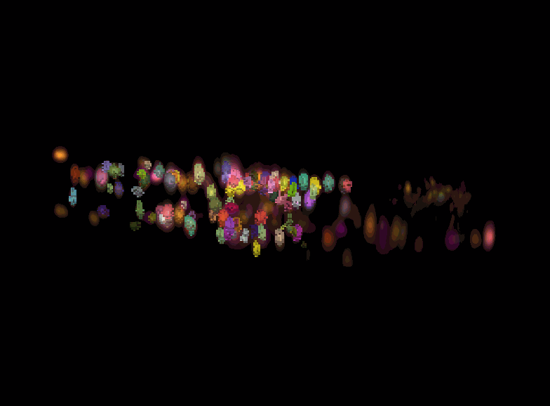
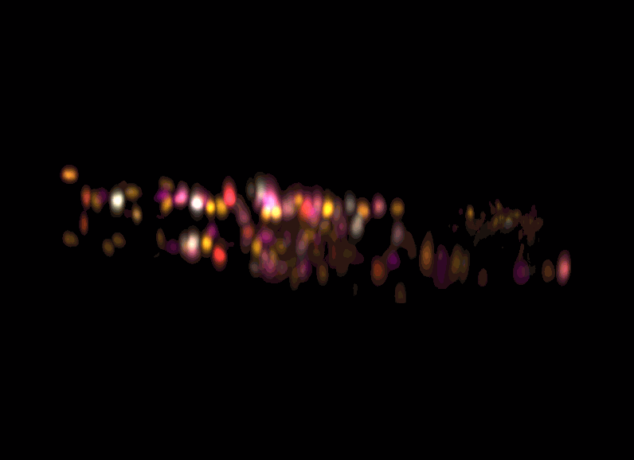

The Flavell Lab
MIT · Research Technician
The Flavell Lab studies how global brain states — think hunger, sickness, or arousal — shape sensory processing and motor output in C. elegans. Because every animal has an identical set of 302 neurons with a known connectome, we can ask precise circuit-level questions about behavior. I build the software pipelines and physical hardware that make these experiments possible.
AutoCellLabel Live


AutoCellLabeler is a 3D convolutional network that achieves high accuracy on neuron identification in multi-channel fluorescent volumes. I extended this work by creating a network capable of high performance on a single channel at nearly 50× the speed of the original.
The result is real-time neuron labeling during live imaging sessions and, through a previously infeasible method, online trace extraction. This opens the door to entirely new experiment designs: using the live state of the entire brain to guide stimulus delivery in real time.
- Single-channel 3D convolutional architecture
- Memory efficiency and inference-time optimization
- Online trace extraction pipeline
- Foundation for closed-loop brain-state experiments
The Laser Project
C. elegans are very thermosensitive, capable of detecting temperature changes of ±0.01°C across a single sub-millimeter head swing. They can also learn to navigate toward a temperature at which they previously found food, making thermosensation an ideal handle on goal-oriented decision making, if you can be accurate enough to fool them.
I developed a novel system that uses worm movement to precisely modulate a near-infrared laser, creating any arbitrary thermal environment in real time. A custom non-interfering cooling system allows temperatures below ambient, and the environment can be switched instantly — enabling experiments that isolate specific moments in the worm's decision-making process.
- Real-time worm tracking and NIR laser modulation
- Custom partially 3D-printed cooling system
- Arbitrary, instantly switchable thermal environments
- Decouples sensory input from motor state for novel experiments
BrainAlignNet

BrainAlignNet is a brain-volume registration pipeline for aligning fluorescent neural images across animals and conditions. As a contribution to the project, I extended its application to an entirely different species — jellyfish — demonstrating that the pipeline is robust well beyond the worm nervous systems it was originally designed for.
- Cross-species extension to Clytia hemisphaerica (jellyfish)
- Careful adaptation of training and inference parameters
- Demonstrates pipeline generalizability across animal phyla